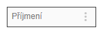
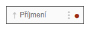
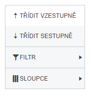

Ovládání seznamu

Seznam má ve svém záhlaví nad jednotlivými sloupci aktivní nadpisy. Tři tečky u každého nadpisu sloupce znamenají lokální menu, které umožní uživateli data ve sloupci třídit, filtrovat případně sloupec zobrazit či skrýt.

Pokud je některá z funkcí nad sloupcem použita, pak je to identifikováno ikonou v nadpise. Vysvětlení práce s jednotlivými funkcemi je v následujících kapitolách. 